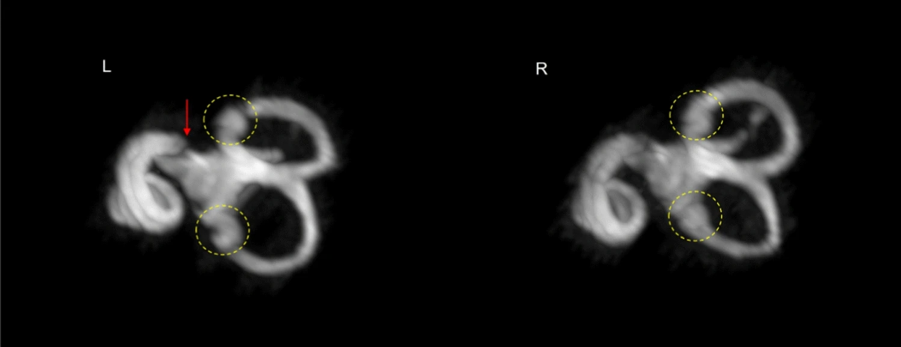

El hueso es blanco, el tejido blando y líquido grises, y el aire negro. La arteria carótida interna y el meato auditivo interno están vacíos en este espécimen. Estructuras visibles: cóclea (C), cóndilo de la mandíbula (CM), meato auditivo externo (EAM), trompa de Eustaquio (ET), meato auditivo interno (IAM), arteria carótida interna (ICA), celdillas mastoideas (MAC) llenas de líquido, estribo (S), cavidad timpánica (TC), membrana timpánica (TM, con manubrio del martillo), y vestíbulo (V). Barra de escala = 10 mm. Imagen tomográfica computarizada de un hueso temporal humano en plano horizontal Burford, C.M., Cornwall, H.L., Farr, M.R.B., Santoni, C.M., Mason, M.J. (2023). Development and Anatomy of the Human Middle Ear. In: Goycoolea, M.V., Selaimen da Costa, S., de Souza, C., Paparella, M.M. (eds) Textbook of Otitis Media.
línea temporal se extiende posteriormente desde la raíz del cigoma. (1) Fisura timpanoescamosa; (2) Fisura timpanomastoidea; CAE: conducto auditivo externo; S: espina de Henle; *: triángulo suprameatal; VP: apófisis Vista lateral de un hueso temporal izquierdo. Mansour, Salah, et al. Anatomía comprensiva y clínica del oído medio, Springer International Publishing AG, 2019. p10
Vista posterior de un hueso temporal izquierdo. Mansour, Salah, et al. Comprehensive and Clinical Anatomy of the Middle Ear, Springer International Publishing AG, 2019. p 11
Las líneas rojas representan la relación del conducto auditivo interno con respecto a la eminencia arcuata y el nervio petroso superficial mayor (NPSG), arteria meníngea media (AMM). Vista superior de un hueso temporal izquierdo. Mansour, Salah, et al. Anatomía comprensiva y clínica del oído medio, Springer International Publishing AG, 2019. p13
La flecha roja atraviesa el canal carotídeo. Vista inferior de un hueso temporal izquierdo. Mansour, Salah, et al. Anatomía comprensiva y clínica del oído medio, Springer International Publishing AG, 2019. p16
La membrana timpánica normal es translúcida, a nivel del anillo, con el reflejo en el cuadrante anteroinferior. AS cuadrante anterosuperior, AI cuadrante anteroinferior, PS cuadrante posterosuperior, PI cuadrante posteroinferior, PF pliegue maleolar posterior, LP apófisis lateral del martillo (prominencia maleolar), M manubrio del martillo, R reflejo, A anillo, SM membrana de Shrapnell Oído derecho Rebol, J. (2022). Middle Ear Anatomy. In: Otoscopy Findings
Pared medial del oído medio tras la extirpación de la membrana timpánica. I yunque, S cabeza de estribo, F parte timpánica del nervio facial (en el canal óseo), PC proceso cocleariforme, M martillo, O nicho oval, R nicho ventana redonda, P promontorio. Oído derecho Rebol, J. (2022). Middle Ear Anatomy. In: Otoscopy Findings
Pared medial del oído medio tras la extirpación de la membrana timpánica. I yunque, S cabeza de estribo, F parte timpánica del nervio facial (en el canal óseo), PC proceso cocleariforme, M martillo, O nicho oval, R nicho ventana redonda, P promontorio. Oído izquierdo Rebol, J. (2022). Middle Ear Anatomy. In: Otoscopy Findings
L processus lenticularis, PL processus longus (proceso largo), C corpus, PB processus breve (proceso corto). El yunque derecho Rebol, J. (2022). Middle Ear Anatomy. In: Otoscopy Findings
Supraestructura del estribo extirpado en la estapedotomía, colocada para comparación de tamaño en una moneda de 1 céntimo de euro, que tiene un diámetro de 16 mm.En la supraestructura pueden identificarse las cruras anterior y posterior, así como la cabeza del estribo. El estribo mide 3 × 2,5 mm. Estribe Rebol, J. (2022). Middle Ear Anatomy. In: Otoscopy Findings
 imágenes de RM de alta resolución del oído interno obtenidas mediante 3D T2W DRIVE Aphiwatthanasumet, K., Jethwa, K., Glover, P. et al. Morphology of the human inner ear and vestibulocochlear nerve assessed using 7 T MRI. Magn Reson Mater Phy (2024).
La Indicación de las mediciones del diámetro largo (DL), el diámetro corto (DC) y el área de la sección transversal (ASC) de los nervios craneales. b Imágenes MIP del oído interno (del sujeto 1) donde los canales semicirculares conectan con la cóclea a 7 T. c Indicación de la medición de las dimensiones cocleares incluyendo BTLD, altura, anchura y longitud utilizando imágenes MIP. Vista posterior de un hueso temporal izquierdo. Aphiwatthanasumet, K., Jethwa, K., Glover, P. et al. Morphology of the human inner ear and vestibulocochlear nerve assessed using 7 T MRI. Magn Reson Mater Phy (2024).
La Imágenes de RM adquiridas con almohadillas dieléctricas, muestran ambos lados de la cóclea y las ramificaciones de los nervios craneales (CN VII, VII). La ramificación del nervio vestibulococlear (VCN) se indica con la flecha amarilla, CN VII con la flecha roja y CN VIII con la flecha verde. b La anatomía normal de los nervios craneales en el conducto auditivo externo en ocho sujetos, que era claramente visible en cortes axiales en RM a 7 T. c La altura medida en el CAI y los nervios craneales (CN VII, VII) en una imagen axial, que discurre perpendicular al conducto auditivo interno. Aphiwatthanasumet, K., Jethwa, K., Glover, P. et al. Morphology of the human inner ear and vestibulocochlear nerve assessed using 7 T MRI. Magn Reson Mater Phy (2024).